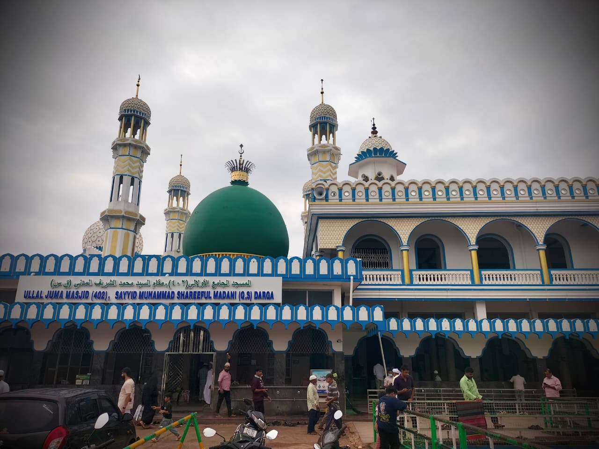

Spiritual History & Legacy
Discover the legacy of Hazrath Sayyid Muhammad Shareeful Madani (R.A.) and Ullal Dargah
Heritage
Learn about the centuries-old spiritual legacy of Ullal Dargah.
Location
Located on the coastal belt of Mangalore, Karnataka.
Timings
Open daily for devotees, visitors, and spiritual seekers.
Urs Festival
Celebrated every 5 years attracting millions of devotees.

About Ullal Dargah
Hazrath Sayyid Muhammad Shareeful Madani (R.A.) arrived in Ullal from Madinah over 400 years ago. His extraordinary piety, spiritual wisdom, and dedication to community service transformed the region into a revered spiritual hub.
Today, Ullal Dargah stands as a beacon of unity, peace, knowledge, and faith, managing numerous educational institutions, orphanages, and community welfare programs.
Esteemed Leadership
Spiritual guidance and community administration